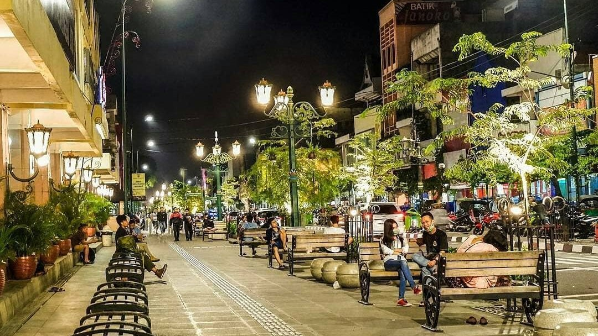
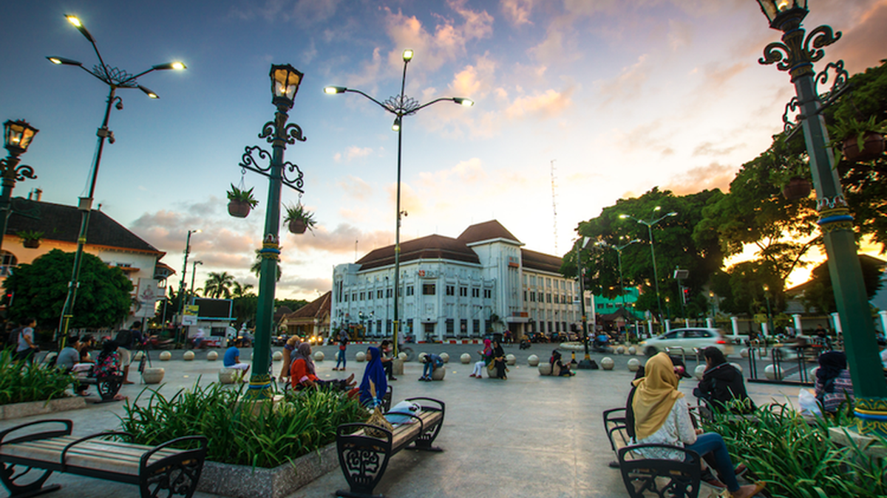

Rekomendasi Spot Wajib, Dari Alam, Kuliner, hingga Budaya!


Temukan hotel, tempat makan, dan cafe terbaik di Jogja!
Hotel strategis dekat Tugu Jogja.
Kuliner khas Padang di tengah kota Jogja.

Cafe cozy dengan view Tugu Jogja.